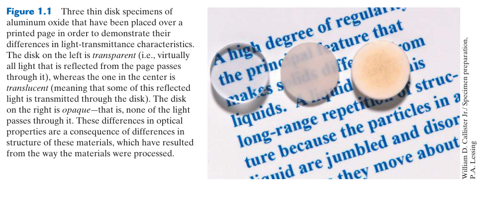
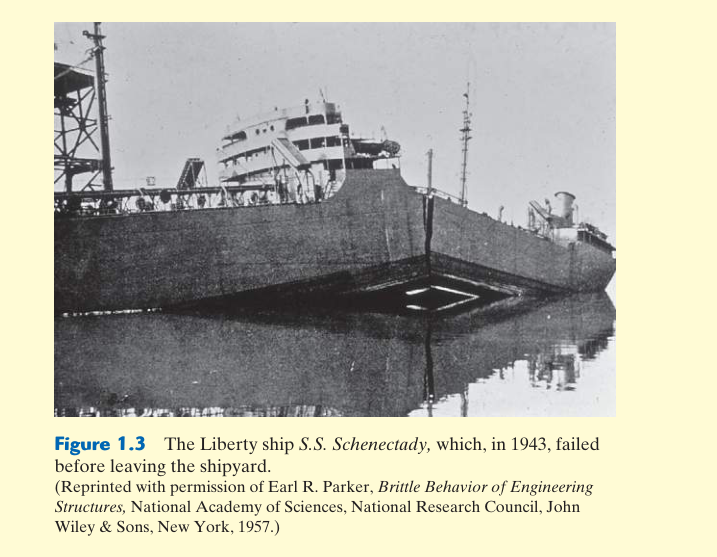
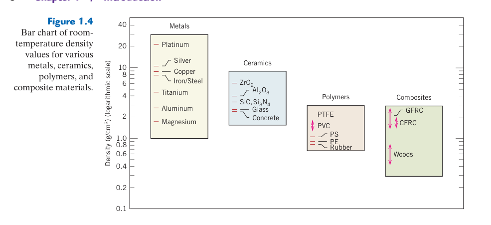
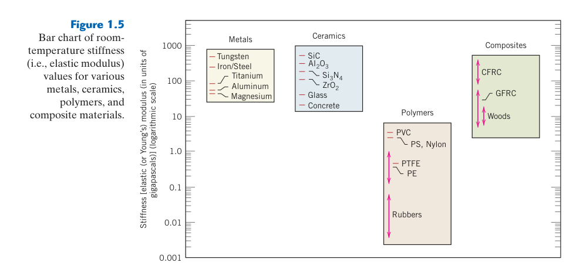
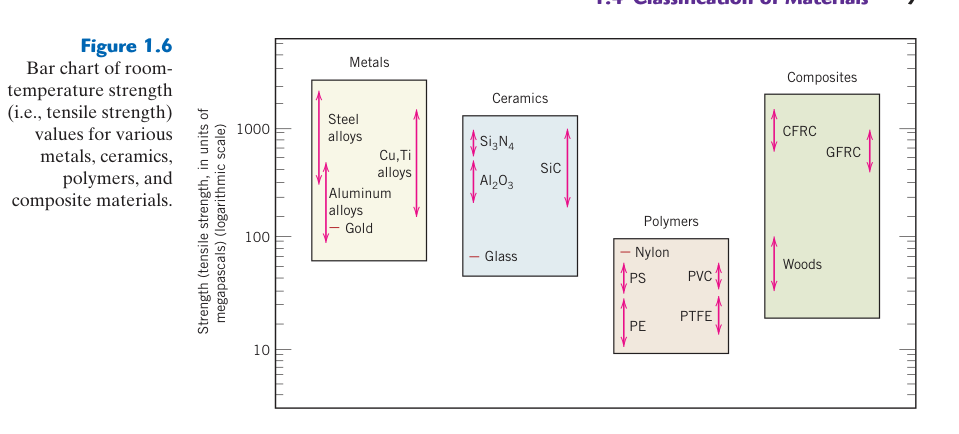

第 1 章 導論
本章預覽
核心問題
為什麼有些材料是透明的、有些導電、有些堅硬卻易碎？工程師在設計產品時，如何從成千上萬種材料中選出最適合的？材料科學這門學科的核心思維是什麼？
10 個關鍵概念
- 材料科學的核心典範：加工 → 結構 → 性質 → 效能，四者環環相扣
- 結構的五個層次：次原子 → 原子 → 奈米 → 微觀 → 巨觀尺度
- 六大性質分類：力學、電性、熱性、磁性、光學、劣化特性
- 三大材料家族：金屬、陶瓷、高分子——依化學組成與原子結構區分
- 金屬：高密度、高剛性、高韌性、優良導電導熱——非局域化電子是關鍵
- 陶瓷：金屬＋非金屬化合物，高硬度、耐高溫、但脆性大
- 高分子：有機碳骨架長鏈，輕量、易成形、但耐溫性差
- 複合材料：結合金屬/陶瓷/高分子以獲得單一材料無法達到的綜合性能
- 先進材料：半導體、生物材料、智慧材料、奈米材料
- Ashby 圖：雙對數性質對照圖，是材料選擇的核心工具
本章邏輯鏈
歷史視角 → 材料科學的定義（四要素典範）→ 為什麼要學 → 三大材料分類（性質比較）→ 先進材料 → 現代材料需求
先備知識橋接
本章是全書的入門章，不需要任何材料科學先備知識。但以下高中程度的理化概念有助於理解：
- 原子基本結構：質子、中子、電子——知道原子由原子核與電子組成即可
- 密度概念：$\rho = m/V$，單位體積的質量
- 導電性：金屬導電、塑膠不導電的基本直覺
- 力學直覺：鋼比塑膠硬、玻璃比鋼脆的日常經驗
如果你對這些概念感到陌生，別擔心——後續章節會從原子尺度逐步建立完整知識體系。

1.1 歷史視角
試著想像沒有材料的世界——沒有汽車、手機、網路、飛機、冰箱、電視、電腦。材料的發展與人類文明的演進密不可分。事實上，人類早期的文明階段就是用材料來命名的：石器時代、青銅時代、鐵器時代。
最早的人類只能使用自然界中少數幾種材料：石頭、木材、黏土、獸皮。隨著時間推移，人類發現了製造新材料的方法——陶器和各種金屬，並且發現透過熱處理和添加其他物質可以改變材料的性質。在那個階段，材料的使用純粹是一個「從有限選項中挑選最適合者」的過程。
🔬 歷史轉折點
直到近 100 年，科學家才真正理解材料內部結構與其性質之間的關係。這個知識使我們能主動設計材料的特性，而不只是被動挑選。今天，數萬種具有特殊性質的材料已經被開發出來，滿足現代複雜社會的需求。
許多讓我們生活舒適的技術發展，都與合適材料的取得密切相關——例如汽車、飛機、電子裝置。有趣的是，一種相對較新的材料——塑膠（高分子），在許多應用中已經取代了木材和金屬，因為它們更輕、更便宜、且更容易成形。今天的電視機就是一個絕佳例子：1970 年代的電視機約使用 2000 個金屬/陶瓷/玻璃零件，而現代電視機只使用約 25 個零件，大部分是高分子材料，而且售價只有當時的 1/9（經過通膨調整）。
材料時代不是簡單的「新材料淘汰舊材料」
石器、青銅器與鐵器時代常被畫成一條直線，好像新材料出現後舊材料便失去價值；實際情況更像材料組合持續擴張。鋼出現後，木材仍是建築與家具的重要材料；高分子出現後，玻璃與金屬仍保有不可取代的功能。原因是工程需求從來不只一項：材料可能需要同時滿足強度、重量、耐溫、耐蝕、成本、可加工性與外觀。某種材料只要在特定需求組合中具有優勢，就會繼續存在。
因此，歷史上的關鍵突破往往不是「發現一種元素」，而是學會控制製程。天然鐵礦早已存在，但必須有足夠高溫的還原與冶煉技術，才能穩定取得鐵；鋁在地殼中很豐富，卻因氧化鋁非常穩定，直到電解製程成熟才成為廉價工程材料。材料的可用性是「資源＋製程＋知識＋能源系統」共同決定的，不只取決於自然界是否存在。
從偶然發現到可重複設計
早期工匠雖不理解原子與晶體，仍能透過經驗建立製程—性質關係，例如加熱、錘打與冷卻會改變刀具表現。現代材料科學的進步，在於把這些經驗轉成可測量、可解釋、可預測的關係：熱處理改變相與差排結構，進而改變硬度與韌性；燒結溫度改變陶瓷孔隙率，進而控制強度；拉伸與冷卻條件改變高分子鏈的取向與結晶度，進而控制剛性與透明度。
量產能力會改寫材料的社會角色
實驗室能製得一小塊優良材料，與工廠能每年穩定生產數百萬件，是兩種不同的成就。量產要求原料純度有規格、製程窗口足夠寬、設備可維護、批次差異可監控，還要有檢驗方法證明產品合格。早期材料常因昂貴而只用於裝飾或特殊用途；當精煉、成形與品質控制成熟後，才可能進入建築、交通與民生產品。
標準化同樣重要。若不同供應商對「鋼」「玻璃」或「塑膠」的成分與測試方式沒有共同定義，設計者無法放心替換供應來源。材料牌號、試驗標準與允收規範把科學知識轉成產業可以交換的語言。從這個角度看，材料史不只是發現史，也是量測、標準與製造系統逐步成熟的歷史。
判讀歷史案例時還要避免倖存者偏差：我們容易只記住最後成功的材料，卻忽略同時期被淘汰的配方與製程。某方案未被採用，可能不是性能不足，而是原料昂貴、難以接合、品質波動太大，或當時沒有合適的檢測設備。技術選擇始終受到當代產業條件限制。
歷史也提醒我們，材料進步常會創造新的失效問題。更高強度讓結構變薄，卻使缺口與腐蝕更敏感；新型黏著劑簡化接合，卻增加維修與回收難度。每次性能提升都應伴隨新的風險清單與檢測方法，而不能假設「新」自然等於「更安全」。
另一個重要轉折是量測技術的進步。顯微鏡、X 光繞射與電子分析讓人們第一次能把看不見的晶粒、相與缺陷連結到巨觀性能；電腦模擬與高通量實驗又進一步縮短候選材料的搜尋時間。不過模型仍必須由實驗校正，因為真實材料包含孔隙、雜質、界面與製程波動，往往比理想結構複雜。材料科學的歷史因此也是「可觀察尺度不斷縮小、可控制結構不斷精細」的歷史。
材料發展也具有累積性：新的理論不會讓工匠經驗失效，而是說明經驗在哪些條件下成立，並把原本只能靠師徒傳承的技巧轉成可量測、可移植的製程規格。科學理解與製造經驗相互校正，才使材料技術真正可靠。
因此，材料史也是人類逐步學會控制結構、管理變異並驗證可靠度的歷史。
1.2 材料科學與工程
材料科學與工程這個學科，有時候可以細分為兩個子領域：材料科學（materials science）研究的是「為什麼材料會有這些性質」——也就是結構與性質之間的關係；材料工程（materials engineering）則是基於這些結構–性質關聯，去設計或改造材料的結構以獲得預定的一組性質。
🧑🔬 材料科學家 vs 材料工程師
從功能角度來看：材料科學家的角色是開發或合成新材料；材料工程師則被要求使用既有材料創造新產品或系統，和/或開發材料的加工技術。大多數材料領域的畢業生被訓練成兼具兩者能力。
結構的層次
「結構」（structure）這個詞需要進一步解釋。材料的結構通常指的是其內部組成的排列方式。結構元素可以依尺寸分類為以下幾個層次：
| 層次 | 尺度範圍 | 說明 |
|---|---|---|
| 次原子結構 | < 1 Å | 原子內電子的能量與分布，與原子核的交互作用 |
| 原子結構 | 1–10 Å | 原子如何組織成分子或晶體 |
| 奈米結構 | 1–100 nm | 原子聚集形成奈米顆粒（約 500 個原子直徑） |
| 微觀結構 | 100 nm–數 mm | 可用顯微鏡直接觀察的結構特徵 |
| 巨觀結構 | 數 mm–1 m | 肉眼可見的結構元素 |
六大性質分類
「性質」（property）是材料對外界刺激所產生反應的種類和大小。幾乎所有固體材料的重要性質可以歸為六大類：
⚡ 力學性質
變形與外加負載/力的關係。例如：彈性模數（剛性）、強度、韌性。
🔌 電性
對電場的響應。例如：導電率和介電常數。
🌡️ 熱性
對溫度變化的響應。例如：熱容量和熱傳導率。
🧲 磁性
對磁場的響應。例如：磁化率和磁導率。
💡 光學性質
對電磁輻射（特別是可見光）的響應。例如：折射率和反射率。
🧪 劣化特性
與材料化學反應性相關。例如：金屬的耐腐蝕性。
這六個分類對應到原書後續安排：力學性質在本教材第 6–8 章；電性、熱性、磁性、光學與劣化特性則位於原書第 17–21 章，不在本教材 Ch1–15 的範圍內。在進入各論之前，第 2–5 章先建立原子結構、晶體結構、缺陷和擴散等基礎知識——因為理解「為什麼材料會有這些性質」必須從原子尺度開始。
🔗 性質之間並非獨立
六大性質類別看似各自獨立，實際上往往互相關聯。例如：
- 金屬的導電性（電性）和導熱性（熱性）都源於自由電子——導電性好的金屬通常導熱性也好
- 材料的熱膨脹（熱性）會產生熱應力（力學性質），可能導致斷裂（劣化）
- 某些陶瓷的介電常數（電性）與其晶體結構（第 3 章）和相變（第 10 章）密切相關
這正是材料科學的迷人之處——所有性質都源於同一組原子和它們的排列方式。
材料科學的核心典範
除了結構和性質之外，還有兩個重要元素：加工（processing）和效能（performance）。材料的結構取決於它如何被加工；材料的效能則取決於它的性質。這四個元素的關係可以用以下線性模型表示：
圖 1.2 的無障礙文字重建：加工 → 結構 → 性質 → 效能
📖 範例：氧化鋁的光學性質
圖 1.1 展示了三片放在印刷文字上的氧化鋁（Al₂O₃）薄圓盤：
- 左邊（透明）：單晶氧化鋁——高度完美的結構使光線幾乎完全穿透
- 中間（半透明）：多晶氧化鋁——晶界散射部分光線
- 右邊（不透明）：多晶＋大量微孔——孔隙對光的散射比晶界更強
三種試片化學組成完全相同，但結構不同（晶界數量、孔隙率），導致光學性質截然不同。而這三種結構又是透過不同的加工技術產生的。這就是加工→結構→性質→效能範例的完美展示。
⚠️ 常見誤解
初學者常以為「材料的性質只由化學組成決定」。事實上，相同化學組成的材料，因為加工方式不同而產生不同結構，最終表現出完全不同的性質。鑽石和石墨都是純碳，但結構不同，性質天差地遠——這也是全書的核心訊息。
四要素不是單向箭頭，而是可回饋的設計迴路
「加工 → 結構 → 性質 → 效能」常被畫成單向流程，但工程設計通常從右向左推理。設計者先定義效能，例如橋梁必須承受多少載荷與低溫、電池需要多少循環壽命，再把效能翻譯成所需性質，接著選擇能產生這些性質的結構，最後決定材料與加工方式。試製後若效能不足，便由測試結果反推是哪一個環節需要修改，形成反覆迭代的閉環。
以鋼齒輪為例：服役效能要求表面耐磨、齒根抗衝擊。若整個零件都做成極硬組織，齒輪可能耐磨卻容易脆裂；若全部保持柔軟，又會快速磨耗。工程解法是用滲碳與淬回火讓表面形成高硬度層、核心保持較高韌性。同一零件中刻意製造結構梯度，即可同時滿足看似衝突的性質。這說明「材料性質」不是材料名稱附帶的固定常數，而是位置、方向、溫度與製程歷史的函數。
不同尺度的結構如何互相串接
次原子尺度決定電子能階與鍵結；原子尺度決定晶格與分子構型；奈米尺度包含析出物、薄膜與鏈片晶；微觀尺度包含晶粒、相分布與孔隙；巨觀尺度則包含零件幾何、表面缺口與接合處。巨觀失效往往源自多尺度串連：表面刮痕在巨觀上形成應力集中，裂紋尖端的局部應力驅動原子鍵斷裂，而晶粒、第二相與殘留應力又控制裂紋是否偏轉或停滯。
理解尺度的目的不是背誦尺寸範圍，而是知道不同問題需要不同觀察工具與模型。電子結構要靠光譜或量子模型，晶相可用 XRD，晶粒可用光學或電子顯微鏡，零件缺陷則可能需要超音波或 X 光檢測。若觀察尺度選錯，即使儀器解析度很高，也未必能回答工程問題。
性質必須附帶測試條件
說「某材料很強」並不完整。拉伸強度、壓縮強度、疲勞強度與破裂韌性是不同量；同一材料在高溫、低溫、快速衝擊、腐蝕環境或長時間載荷下可能表現完全不同。可靠的材料資料至少要包含材料狀態、試片方向、溫度、應變速率與測試方法。這也是材料工程與日常直覺最大的差異之一：工程師不是用形容詞選材，而是用有條件、有單位、可重現的數據做判斷。
把性質與效能分開，才能找到真正原因
性質通常由標準試片測得，例如彈性模數、導熱率或降伏強度；效能則是零件在特定幾何、載荷與環境下的實際表現。兩個零件使用同一材料，因厚度、缺口或散熱面積不同，壽命仍可能相差很大。反過來，兩種材料的單項性質不同，透過幾何重新設計也可能達到相同效能。
例如保溫杯的隔熱效能不只由不銹鋼導熱率決定，還受真空夾層、支撐接觸面積、表面輻射率與杯蓋密封影響。若只把「導熱率低」當成材料目標，就會忽略熱量可能從其他路徑流失。材料科學提供性質，工程分析則把性質放進零件與系統；兩者缺一不可。
四要素也能用來組織實驗：一次只改變一個加工變數，量測結構是否真的改變，再測試性質與效能。如果加工條件變了但結構沒變，性質不應被武斷歸因於加工；如果性質改善卻沒有提升系統效能，則可能存在另一個瓶頸。這種逐層驗證能避免只看相關性就誤判因果。
同一條因果鏈中還可能存在相反作用。例如提高冷卻速率可細化組織並提高強度，也可能增加殘留應力與變形；增加陶瓷燒結溫度可降低孔隙，卻也可能造成晶粒過度成長。材料設計因此常是在兩種結構效應之間尋找製程窗口，而不是讓單一參數愈高愈好。

1.3 為什麼要學材料科學與工程？
答案很簡單：因為工程師設計的東西都是用材料做的。無論是機械、土木、化學或電機工程師，遲早都會遇到涉及材料的設計問題——例如傳動齒輪、建築結構、煉油廠零件或積體電路晶片。
材料選擇的三個準則
- 使用條件：必須先界定材料在服役中會遇到的條件——這決定了材料需要具備哪些性質。很少有材料能同時擁有所有最佳性質。經典例子：高強度的材料通常延性有限，因此需要在兩者之間取捨。
- 性質劣化：材料在服役期間可能發生的性質衰退。例如高溫環境或腐蝕性環境可能顯著降低機械強度。
- 經濟性：最終產品的成本是多少？即使找到了性質完美的材料，如果價格過高，也需要妥協。成品成本還包括加工成最終形狀的費用。
💡 核心洞察
工程師對材料特性、結構–性質關係以及加工技術了解得越多，在材料選擇時就越能做出明智判斷。材料科學不是材料系學生的專利——它是所有工程師的基本素養。
案例研究 1.1：自由輪（Liberty Ship）破損事件
二戰期間，美國大量生產 Liberty 貨輪（共 2,710 艘）以運送物資到歐洲。但有些船甚至在離開造船廠之前就裂成兩半（圖 1.3）。這是一個著名的脆性斷裂案例——原本被認為是延性的鋼材，在特定條件下表現出脆性。
⚠️ 事故原因分析
- 延脆轉變：某些金屬合金在低溫下從延性變為脆性。Liberty 船被部署到寒冷的北大西洋，鋼材冷卻到轉變溫度以下。
- 應力集中：每個艙口的角落是方形的——這些角落成為應力集中的裂紋形成點。
- 焊接取代鉚接：為了加快建造速度，使用焊接代替鉚接。但焊縫中的裂紋可以不受阻礙地傳播；而鉚接結構中，裂紋碰到鋼板邊緣就會停止。
- 焊接缺陷：經驗不足的焊工引入了缺陷和裂紋起始點。
修正措施包括：降低鋼材的延脆轉變溫度（減少硫和磷雜質）、將艙口角落改為圓弧形、安裝裂紋阻止裝置、改進焊接規範。
📖 這個案例教我們什麼？
材料科學家與工程師的關鍵角色之一是：分析機械破損、確定原因、提出預防措施。Liberty 船雖然有破損事故，但整體計畫仍被認為成功——因為倖存的船隻成功運送了物資，而且在材料破損分析領域促成了整個學科的發展。
材料選錯通常不是因為不知道「最強」材料
許多失效並非材料本身品質差，而是設計者忽略了實際服役條件。高強度鋼可能在含氫環境中發生延遲破裂；耐熱高分子若長時間承受應力，仍可能因潛變逐漸變形；陶瓷抗壓強度很高，卻可能被很小的表面裂紋控制拉伸強度。正確問題不是「哪個數值最大」，而是「哪一種失效模式最可能先發生」。
材料知識的價值之一，就是能建立失效模式清單：是否會降伏、疲勞、潛變、脆裂、腐蝕、磨耗、熱衝擊或環境劣化？每種模式需要不同的材料參數與安全策略。例如設計反覆旋轉的軸，抗拉強度不是唯一關鍵，表面粗糙度、缺口、殘留應力與疲勞裂紋成長同樣重要。
從材料替換到系統重新設計
材料替換不是把零件材質名稱換掉就結束。把鋼換成鋁，彈性模數約降為三分之一；即使強度足夠，零件可能因剛性不足而變形過大，因此截面形狀也要重設。把玻璃換成透明高分子，可降低重量與破裂風險，但需重新評估刮傷、氣體滲透、紫外線老化與使用溫度。成功的材料替代通常伴隨幾何、製程、接合與品質控制一起改變。
學習材料科學的三種推理能力
- 診斷：由失效外觀與測試結果，反推可能的結構與製程原因。
- 預測：知道加工條件改變後，哪些結構與性質會隨之變化。
- 取捨：承認性能之間常互相衝突，選擇最符合整體需求而非單項冠軍的方案。
工程決策需要保留可追溯的理由
實際選材可建立決策矩陣，把必要條件與偏好條件分開。必要條件採通過／淘汰，例如最高使用溫度、法規與生物相容性；偏好條件才給權重，例如成本 30%、重量 25%、耐蝕 25%、可回收性 20%。權重不是客觀真理，而是設計團隊對使用情境的明確假設。當需求改變時，團隊可以重新計算，而不是重新爭論每個人的材料印象。
還要記錄資料來源與信心程度。手冊典型值、供應商保證值、實驗室小樣與量產零件數據的可信度不同。若關鍵資料缺失，最合理的下一步可能不是立刻選材，而是設計一項能區分候選方案的試驗。好的材料工程決策不只給答案，也說明答案在什麼假設下成立，以及哪個未知量最可能改變結論。
此外，選材不是一次性的工作。供應商、法規、原料價格與產品需求會改變，原本的最佳方案可能失去優勢。建立可更新的需求表、資料來源與淘汰理由，能讓後續團隊在條件變動時快速重評，而不是從零開始或沿用已失效的歷史選擇。
在安全關鍵設計中，還要考慮「失效是否可被發現」。即使兩種材料的平均壽命相近，能以穩定塑性變形提供預警的方案，通常比無預警脆裂更容易管理。可檢測性、維修間隔與失效後果都是材料選擇的一部分，而非測完強度後才處理的附加問題。

1.4 材料分類
固體材料可以方便地分為三大基本類別：金屬（metals）、陶瓷（ceramics）、高分子（polymers），主要依據化學組成與原子結構來區分。此外還有複合材料（composites），是兩種以上材料的工程組合。
金屬（Metals）
金屬由一種或多種金屬元素組成（例如鐵、鋁、銅、鈦、金、鎳），通常也含有少量非金屬元素（例如碳、氮、氧）。金屬中的原子以高度有序的方式排列（詳見第 3 章），且相對於陶瓷和高分子具有較高密度。
金屬材料具有大量非局域化電子——這些電子不束縛於特定原子。金屬的許多性質直接源於這些電子：
- 極佳的電和熱導體
- 對可見光不透明，拋光表面有金屬光澤
- 部分金屬（Fe, Co, Ni）具有良好的磁性
- 剛性高、強度高、且具有延性（可大量變形而不斷裂）
- 抗斷裂性（韌性）高——這解釋了它們為何廣泛用於結構應用
陶瓷（Ceramics）
陶瓷是金屬元素與非金屬元素之間的化合物；最常見的是氧化物、氮化物和碳化物。例如氧化鋁（Al₂O₃）、二氧化矽（SiO₂）、碳化矽（SiC）、氮化矽（Si₃N₄），以及傳統陶瓷如瓷土、水泥和玻璃。
陶瓷的力學行為特點：
- 剛性與強度與金屬相當
- 通常非常硬
- 歷史上極脆（缺乏延性），高度易碎
- 但新型陶瓷正在被設計以提高抗斷裂性——用於炊具、刀具、甚至汽車引擎零件
陶瓷通常是熱和電的絕緣體，且比金屬和高分子更耐高溫和惡劣環境。光學上，陶瓷可以是透明、半透明或不透明的。
高分子（Polymers）
高分子包括我們熟悉的塑膠和橡膠材料。大多數高分子是有機化合物，以碳、氫及其他非金屬元素（O, N, Si）為化學基礎。它們具有非常大的分子結構，通常呈鏈狀，骨架由碳原子構成。
常見高分子：聚乙烯（PE）、尼龍（nylon）、聚氯乙烯（PVC）、聚碳酸酯（PC）、聚苯乙烯（PS）、矽橡膠。這些材料：
- 密度低
- 剛性和強度不如金屬和陶瓷——但以單位質量計算的比強度/比剛度可與金屬和陶瓷媲美
- 極具延性和可塑性，容易成形為複雜形狀
- 化學惰性，在大多數環境中不反應
- 電絕緣、非磁性
⚠️ 高分子的主要缺點
高分子在中等溫度下就會軟化和/或分解，這在某些應用中限制了它們的使用。此外，它們對二氧化碳等氣體的阻隔性不如金屬和玻璃——這就是為什麼兩公升塑膠瓶裝的汽水在幾個月內就「沒氣了」，而鋁罐和玻璃瓶可以保持碳酸化數年。
複合材料（Composites）
複合材料由兩種（或以上）來自前述類別的獨立材料組合而成。設計目標是達成單一材料無法提供的綜合性能，同時納入每種組成材料的最佳特性。最常見的例子是玻璃纖維（fiberglass）——細小的玻璃纖維嵌入高分子基材（通常是環氧樹脂或聚酯）中。玻璃纖維相對強且剛（但脆），而高分子則較延性。組合後的玻璃纖維複合材料既強又剛，同時有一定程度的延性和韌性。
📖 案例研究 1.2：碳酸飲料容器
碳酸飲料容器必須滿足以下條件：(1) 阻隔二氧化碳；(2) 無毒、不與飲料反應、最好可回收；(3) 足夠強度承受跌落；(4) 便宜；(5) 若需透明則保持光學清晰度；(6) 可做出不同顏色/標籤。
三種基本材料——鋁（金屬）、玻璃（陶瓷）、聚酯塑膠（高分子）——都用於此應用。每種各有優缺點：鋁罐強度高但容易凹陷、不透明且較貴；玻璃瓶便宜且完全阻氣但易碎且重；塑膠瓶輕量便宜透明但二氧化碳阻隔性較差。
Ashby 圖（材料性質對照圖）
比單一性質長條圖更有用的呈現方式是將兩種性質的數值互相對照作圖（雙對數尺度）。例如圖 1.12 將剛性（彈性模數）對密度作圖。同一類材料（如金屬、陶瓷、高分子）的資料點會聚集在一起，並用粗線圈出包絡線（envelope），定義該材料家族的性質範圍。
為什麼用雙對數尺度？因為不同材料的性質可以跨越好幾個數量級——以剛性為例，橡膠的彈性模數約 0.01 GPa，而鑽石高達 1000 GPa，相差五個數量級。雙對數圖能在單一圖表中容納所有工程材料的性質範圍。
📖 如何讀懂 Ashby 圖（以剛性 vs 密度為例）
在圖 1.12 的剛性–密度圖中：
- 右上角（高剛性 + 高密度）：工程陶瓷（SiC, Al₂O₃）、工程合金（鋼、鎳合金）
- 左上角（高剛性 + 低密度）：碳纖維複合材料（CFRP）——這裡是輕量化結構設計的聖杯
- 右下角（低剛性 + 高密度）：鉛、某些重金屬
- 左下角（低剛性 + 低密度）：發泡材料（foams）、軟木、低密度高分子
設計輕量且剛性的結構時（如飛機機翼），工程師會沿著圖中左上方向尋找材料——這就是 Ashby 圖作為材料選擇工具的威力。
💡 Ashby 圖的核心價值
Ashby 圖（又稱材料選擇圖或氣泡圖，以發明者 Michael F. Ashby 命名）能一眼看出不同材料家族之間性質的權衡取捨——例如輕量化 vs 剛性。任何兩種材料性質都可以製作此類圖表（如熱傳導率 vs 導電率）。圖中還包含了三種之前未討論的材料家族：彈性體（elastomers，橡膠狀高分子）、天然材料（木材、皮革、軟木）、發泡材料（foams，高孔隙率，常用於緩衝和包裝）。
分類的物理基礎：電子與鍵結方式
金屬、陶瓷與高分子的差異可追溯到電子如何參與鍵結。金屬的價電子較為離域，因此容易傳輸電荷與熱，也讓原子層在滑移時仍能維持鍵結；陶瓷多由離子鍵與共價鍵構成，鍵結強且常具有電荷或方向限制，因此高硬度、高耐溫但塑性受限；高分子主鏈內是強共價鍵，鏈與鏈之間卻多由較弱二次鍵連接，因此性質高度依賴鏈長、纏結、結晶與交聯。
這些是整體趨勢，不是絕對規則。石墨是陶瓷性碳材料，卻能沿層面導電且易滑動；導電高分子可透過共軛結構與摻雜傳輸電荷；某些金屬間化合物因有序結構與方向性鍵結而相當脆。遇到例外時，不應放棄分類，而應回到更底層的鍵結與結構分析。
比較材料時要使用「比性質」
運輸與航太設計常關心單位重量能提供多少性能。比強度為強度除以密度，比模數為彈性模數除以密度。鋼的絕對模數遠高於高分子，但碳纖維複合材料沿纖維方向可兼具低密度與高模數，因此在減重設計中很有吸引力。不過複合材料通常具有方向性，橫向與層間性質較弱，不能只引用最佳方向數據。
Ashby 圖把兩項性質放在對數座標上，材料家族通常形成區域而非單點。區域的寬度表示同一家族可透過成分、孔隙、熱處理與結構設計調整。讀圖時應先用限制條件排除不合格區，再沿性能指標方向尋找候選者，最後回到成本、製程與可靠度驗證。
複合材料的界面是第四個角色
複合材料不只是「強化材＋基材」。界面必須把載荷由基材傳給纖維或顆粒；界面太弱，載荷無法有效傳遞，材料會提早脫黏；界面過強，裂紋可能直接穿過強化材，失去拔出與偏轉所提供的增韌。纖維方向、長度、體積分率、孔隙與界面結合共同決定性質。因此，同樣是碳纖維與環氧樹脂，鋪層順序不同就可能產生完全不同的結構表現。
材料家族內部的變化可能大於家族之間的直覺差異
「鋼」包含低碳鋼、工具鋼、不銹鋼與許多熱處理狀態；其降伏強度、耐蝕性與韌性範圍非常寬。「高分子」則包含柔軟彈性體、透明熱塑性塑膠與高度交聯的耐熱樹脂。即使化學成分相近，結晶度、分子量、孔隙率或熱處理不同，也足以讓性質跨越數倍。
因此比較材料時，最好分三層進行：先比較材料家族以掌握物理上限與加工特徵；再比較具體材料系統，例如 6xxx 與 7xxx 鋁合金；最後比較供應狀態與製程，例如退火態、冷加工態或析出硬化態。若跳過後兩層，選材結論通常太粗糙，無法直接變成製造規格。
材料類別也會影響零件的設計哲學。金屬可藉塑性變形重新分配局部應力；脆性陶瓷較依賴避免拉伸、控制缺陷與統計可靠度；高分子則必須把時間與溫度納入剛性設計；複合材料需要沿主要載荷方向配置纖維。材料不是在幾何完成後才被填入的空格，而會反過來決定合理幾何。
界線模糊的材料也日益重要，例如金屬玻璃兼具金屬成分與非晶結構，陶瓷基複合材料利用纖維改善傳統陶瓷的脆性，導電高分子則突破一般高分子絕緣的印象。面對這些材料，最有效的描述方式仍是分別說明成分、鍵結、結構與製程，而不是勉強塞入單一標籤。

1.5 先進材料
用於高科技應用的材料有時被稱為先進材料（advanced materials）。高科技指的是使用相對精密複雜原理的裝置或產品——包括電子設備、電腦、光纖系統、高能量密度電池、能量轉換系統和飛機。先進材料通常價格昂貴，包括半導體、生物材料、智慧材料和奈米工程材料。
半導體（Semiconductors）
半導體的電性介於導體（金屬）和絕緣體（陶瓷、高分子）之間。更重要的是，這些材料的電性對微量雜質原子的存在極其敏感，而且雜質濃度可以在非常小的空間區域內精確控制。半導體使積體電路的出現成為可能，徹底改變了電子產業和電腦產業。
生物材料（Biomaterials）
生物材料是植入人體內的非活性材料，必須以可靠、安全且生理上令人滿意的方式運作，同時與活體組織互動。也就是說，生物材料必須具有生物相容性（biocompatibility）——與接觸的體組織和體液相容。適當的生物材料存在於金屬合金、陶瓷、高分子和複合材料各類中。
應用實例：關節（髖、膝）置換、心臟瓣膜、血管移植物、骨折固定裝置、牙科修復、新器官組織的生成。
智慧材料（Smart Materials）
智慧（或智能）材料是一類正在開發中的尖端材料，能感測環境變化並以預定方式回應——就像生物體一樣。智慧材料（或系統）的組成包括：
- 感測器（sensor）：偵測輸入訊號
- 致動器（actuator）：執行回應和適應性功能——改變形狀、位置、自然頻率或機械特性
四種常用致動器材料的比較：
| 致動器類型 | 刺激 | 回應 | 應用範例 |
|---|---|---|---|
| 形狀記憶合金（SMA） | 溫度變化 | 回復原始形狀 | 眼鏡框架、血管支架、航空致動器 |
| 壓電陶瓷 | 電場/電壓 | 膨脹或收縮（反之亦然） | 噴墨印表機噴頭、超音波換能器 |
| 磁致伸縮材料 | 磁場 | 改變尺寸 | 聲納、精密定位器 |
| 電流變/磁流變流體 | 電場/磁場 | 黏度急劇變化 | 汽車避震器、離合器 |
壓電陶瓷特別值得一提——它們對外加電場產生膨脹或收縮，反之，當受到機械應力時也會產生電場。壓電陶瓷噴墨印表機噴頭就是一個經典應用：施加電壓使壓電元件變形，擠出墨水液滴；完整電性內容位於原書第 18 章，本教材不另展開。
🧠 智慧 vs 被動：一個類比
傳統材料像工具——被動等待外力作用。智慧材料像生物體——感測、判斷、回應。一個日常類比：普通太陽眼鏡只是被動濾光，而光致變色鏡片（photochromic）會根據紫外線強度自動調整顏色深淺——這就是一種智慧材料行為。
奈米材料（Nanomaterials）
奈米材料可以是一般材料類型中的任何一種，但與其他材料的區別不在於化學組成而是尺寸——這些結構實體的尺度在奈米級（1–100 nm，約相當於 500 個原子直徑）。
🔬 由上而下 vs 由下而上
傳統的材料研究方法被稱為由上而下（top-down）：先研究大而複雜的結構，再探究更小更簡單的構建塊。隨著掃描探針顯微鏡（能觀察單個原子和分子）的發展，現在可以從原子層級由下而上（bottom-up）設計和建造新結構——一個原子一個原子地排列。研究這些材料性質的學科稱為奈米科技（nanotechnology）。
當顆粒尺寸接近原子尺度時，物質的物理和化學特性可能發生劇烈變化：不透明的變透明、固體變液體、化學穩定的變可燃、電絕緣體變導體。這些效應部分源於量子力學，部分源於表面現象——隨著顆粒尺寸減小，位於表面的原子比例急劇增加。
📖 為什麼奈米尺度如此特別？——表面效應
考慮一個邊長為 1 cm 的立方體：表面原子佔總原子數的比例極小（約 10⁻⁷）。但如果將它切成邊長 1 nm 的小方塊，表面原子的比例暴增到約 80%。表面原子的鍵結狀態與內部原子不同（缺少鄰近原子），因此化學反應性、熔點、光學性質等都可能顯著改變。
例如：巨觀尺度的黃金是化學惰性的黃色金屬，但直徑約 10 nm 的金奈米顆粒呈紅色，且具有優異的催化活性——中世紀的彩繪玻璃窗就是利用了金奈米顆粒的光學效應，只是當時的工匠不知道他們正在操作奈米材料。
本書中討論的奈米材料應用涵蓋多個章節：
- 汽車觸媒轉換器（第 4 章 Materials of Importance）
- 奈米碳——富勒烯、碳奈米管、石墨烯（第 13.10 節）
- 奈米複合材料（第 16.16 節）
- 硬碟驅動器的磁性奈米晶粒（第 20.11 節）
- 磁帶資料儲存的磁性顆粒（第 20.11 節）
⚠️ 奈米材料的安全性
每當開發一種新材料，必須考慮其對人類和動物的潛在有害和毒理學交互作用。奈米顆粒的表面積–體積比極大，可能導致高化學反應性。雖然奈米材料的安全性研究仍相對不足，但已有擔憂指出它們可能對人體造成危害。這是一個仍在快速發展的研究領域。
「先進」描述的是功能與控制能力，不等於年代新
一種材料是否先進，常取決於它能否提供傳統結構材料以外的功能，以及製造者能否精確控制其成分與結構。矽本身是古老元素，但高純度單晶矽需要把雜質與缺陷控制到極低水平，並以微影與摻雜形成奈米尺度元件，因此屬於先進材料系統。相反地，一種剛發明但性能不穩定、無法大量製造的材料，仍未必具備工程價值。
半導體：用極少量雜質改變巨觀功能
本徵半導體的載子濃度有限；加入受控的施體或受體雜質後，可形成 n 型或 p 型區域。重要的不只是平均摻雜量，還包括深度分布、界面陡峭度、缺陷與載子遷移率。半導體展示了材料科學的一個極端：微量成分變化不一定只造成小幅性質改變，而可能使元件功能產生質變。
生物材料：必須同時面對材料與生命系統
生物相容性不只是「沒有毒」。植入物還需考慮蛋白質吸附、免疫反應、腐蝕產物、磨耗顆粒、細菌附著與組織整合。髖關節需要耐磨與疲勞可靠度，骨固定材料可能需要適當表面粗糙度促進骨長入，可降解縫線則要讓強度衰減速度與組織癒合速度相配。材料在體外測試良好，不代表進入複雜生理環境後必然安全。
智慧材料與致動器：輸入、輸出與遲滯
智慧材料可把溫度、電場、磁場、光或應力轉換成形狀、電荷或其他可量測訊號。評估時除了最大輸出，還要看響應速度、循環穩定性、能量效率、遲滯與工作溫區。形狀記憶合金可產生大回復應變，但熱驅動速度受散熱限制；壓電材料響應快速，位移卻通常較小。選擇致動材料必須與控制系統和散熱設計一起考慮。
奈米材料：尺寸小只是起點
當顆粒尺寸降低，表面原子所占比例急遽增加，表面能、反應性、熔點與燒結行為都可能改變；當尺寸接近電子、聲子或磁畴的特徵長度，還可能出現量子侷限或尺寸相關輸運。然而奈米化也帶來團聚、污染、量產一致性與健康風險。工程上真正重要的是能否把尺寸效應穩定地轉化為產品功能，而不是僅僅量到「奈米級」。
從研究成果到工程材料的資格驗證
先進材料常在小試片上展示亮眼性能，但產品化還需跨越放大與驗證。尺寸放大後，缺陷數量增加，最弱位置更容易控制整體可靠度；複雜形狀中的溫度與成分可能不均；新製程也可能缺乏維修經驗與非破壞檢測方法。航空、醫療與能源設備尤其需要長時間疲勞、環境老化、批次一致性及失效後果評估。
判斷一項先進材料是否成熟，可依序詢問：性能是否能重複？能否製成所需尺寸與形狀？原料與設備是否可供應？缺陷能否被檢出？壽命模型是否經過驗證？報廢後如何處理？這些問題不會削弱新材料的創新價值，反而是把科學發現轉成可靠技術所必須的橋梁。
先進材料還常需要與感測器、電子控制、封裝與軟體共同工作。智慧材料若沒有可靠的驅動與回授，只是一個會響應刺激的試片；半導體若沒有潔淨製程與封裝，也無法成為可用元件。因此評估時應把材料視為系統中的功能模組，而不是孤立追求一項破紀錄性質。
可靠度資料的累積需要時間，這也是成熟材料仍常被採用的原因。新材料若只能提高少量性能，卻缺乏數十年的疲勞、老化與維修紀錄，導入成本可能超過收益。合理策略可從非關鍵零件、小批量試用與加速測試開始，逐步建立製程能力與服役資料。

1.6 現代材料需求
儘管過去幾十年材料領域取得了巨大進步，更先進和更專業的材料的開發仍然是當代技術挑戰的核心。以下幾個領域尤其需要新材料突破：
能源
- 太陽能：需要開發高效率且低成本的光伏材料
- 電池：需要更高能量密度、更低成本的新電池材料（目前鋰離子電池是尖端技術，但仍面臨技術挑戰）
- 氫燃料電池：無污染的能量轉換技術，需要更好的燃料電池材料和產氫催化劑
- 核能：需要解決燃料、圍阻結構和放射性廢棄物處置等材料問題
運輸
減輕運輸工具重量並提高引擎運轉溫度可提升燃油效率。需要開發新型高強度、低密度結構材料，以及用於引擎零件的更高溫能力材料。
環境品質
空氣和水汙染控制技術使用各種材料。材料的加工和精煉方法需要改進以減少環境劣化。此外，許多材料來源是非再生的（例如大多數高分子的原料是石油、某些金屬），需要：
- 發現額外儲量
- 開發具有類似性質但環境影響更小的新材料
- 加強回收利用和發展回收技術
⚠️ 永續性挑戰
材料工程師面臨的根本矛盾：現代生活品質依賴材料，但材料的生產和使用往往對環境造成衝擊。21 世紀的核心挑戰之一是在材料性能、成本和環境永續性之間找到平衡。
循環經濟與材料
傳統的線性經濟模式是「開採→製造→使用→丟棄」。但材料資源有限，循環經濟（circular economy）的概念主張材料應盡可能循環使用。這涉及：
- 設計階段就考慮材料的可回收性和分離難度
- 回收技術的改進——例如從電子廢棄物中回收稀土元素
- 生物可降解材料的開發——某些塑膠可由微生物分解
- 壽命延長——透過更好的耐腐蝕材料和保護塗層延長產品使用壽命
這些都是材料科學家和工程師在未來幾十年需要解決的核心問題；原書將其放在第 22 章深入討論，本教材在此保留必要的概念導覽。
用生命週期而不是單一階段評估材料
材料的環境負荷分布在原料開採、精煉、製造、運輸、使用、維修與報廢各階段。輕量材料在製造時可能需要較多能源，卻能在交通工具數十年的使用中降低燃料消耗；耐久材料初始成本較高，但若能延長壽命並減少更換，總體資源消耗可能更低。比較時必須先定義相同的功能單位，例如「承載相同載荷並使用二十年」，而不是只比較每公斤材料的排放。
能源轉型其實是材料問題的集合
電池需要高容量電極、穩定電解質、低阻抗界面與安全隔離膜；太陽能模組除了吸光層效率，還需封裝材料抵抗水氣與紫外線；氫能系統面臨儲氫、滲透、氫脆與觸媒稀貴金屬問題；高溫發電設備則受潛變、氧化與熱障塗層壽命限制。能源技術的瓶頸常不是概念不可行，而是材料在成本、壽命與量產條件下無法同時達標。
關鍵原料與供應風險
材料選擇也受到地理集中、政治風險與提煉能力限制。某元素在地殼中並非極少，仍可能因高純度分離困難、產地集中或作為副產品生產而供應不穩。工程師可採取的策略包括降低用量、以常見元素替代、提高回收率、設計可拆解結構，以及建立第二供應來源。替代材料若犧牲太多效率或壽命，卻可能在系統層級造成更高環境成本，因此仍需量化比較。
循環設計要從接合方式開始
理論上可回收不代表實際上會被回收。多材料黏合、難以辨識的塑膠、含有微量危害物的塗層，都可能使分離成本高於回收價值。設計階段可採用可拆卸接頭、清楚材料標示、減少不相容材料混合、提供維修與零件更換路徑。循環經濟不是報廢端多放一個回收桶，而是從產品架構就讓材料保有再次使用的純度與價值。
效率提升也可能帶來反彈效應
更輕、更便宜或更節能的材料技術若使產品使用量大幅增加，總資源消耗未必下降。例如單件包裝減薄可以節省材料，但若回收困難且一次性使用量持續成長，整體廢棄物仍可能增加。因此永續評估需同時看單件效率與整個市場規模，不能把「每件用料較少」直接等同於總環境負荷較低。
延長壽命、維修與再使用通常能保留產品中已投入的製造能量，但也有例外：老舊設備若使用階段效率極差，提前替換可能反而降低全生命週期負荷。真正的判斷需要設定時間範圍、功能單位與替代情境，計算能源、材料與排放在各階段的分布。材料工程師的角色，是讓這些取捨能以數據討論，而不是只靠「天然」「可回收」或「高科技」等標籤。
最後，任何永續聲明都應說清楚比較基準。「碳排降低 30%」必須回答相對哪個製程、在哪個地區能源組合、是否包含使用與報廢階段。邊界定義不同，結論可能反轉。透明揭露假設與不確定性，比給出一個看似精確卻無法重現的綠色分數更有工程價值。
社會面也不能完全化約為碳排數字。採礦可能影響水資源與社區，回收作業可能暴露勞工於危害物，生質原料則可能與土地及糧食用途競爭。負責任的材料決策至少要辨認主要利害關係人與風險轉移，避免只把環境負荷從產品使用地搬到原料產地。
補強專題：從需求到材料——工程選材的五步流程
工程選材不是問「哪一種材料最好」，而是問「在這組需求下，哪一種材料最適合」。可依下列五步進行：
- 定義功能：零件要承載、隔熱、導電、密封，還是保護使用者？
- 列出限制條件：例如密度必須低於 2.0 g/cm³、使用溫度高於 120°C、不可導電。違反任何一項就淘汰。
- 設定最佳化目標：在合格材料中追求最低質量、最低成本、最高壽命或最低碳排。
- 檢查製程與形狀：材料即使性質合格，若無法製成薄壁、複雜曲面或大量生產，仍不是可行方案。
- 排序並驗證：以樣品試驗、失效模式與生命週期資料確認候選者，而不是只相信資料表的單一數值。
📝 工程決策例：可重複使用水壺的材料選擇
功能：盛裝飲用水並承受日常跌落。限制條件：無毒、耐 90°C 熱水、質量低、可清洗。目標：在壽命與成本之間取得平衡。
| 候選材料 | 優點 | 主要風險 | 判斷 |
|---|---|---|---|
| 玻璃 | 透明、化學穩定 | 重、跌落時脆裂 | 適合桌上使用 |
| 不銹鋼 | 耐熱、耐衝擊、壽命長 | 較重、不透明 | 適合高耐用需求 |
| PP | 輕、便宜、易成形 | 刮傷與長期老化 | 適合低成本大量產品 |
結論：答案取決於使用情境；這正是「加工 → 結構 → 性質 → 效能」典範在工程決策中的實際用法。
初學者常見錯誤
❌ 錯誤 1：化學組成決定一切
「只要知道材料的化學式，就能預測它的性質。」錯。鑽石和石墨都是純碳，但性質截然不同。結構——原子如何排列——和化學組成同等重要。這也是全書反覆強調的核心主題。
❌ 錯誤 2：金屬＝硬，高分子＝軟
「金屬都很硬，高分子都很軟。」錯。純鉛（金屬）比尼龍（高分子）軟得多；芳綸纖維（Kevlar，一種高分子）的比強度可以超過鋼。性質不能單用材料類別來判斷。
❌ 錯誤 3：陶瓷一定脆
「所有陶瓷都像咖啡杯一樣一摔就碎。」不完全對。雖然傳統陶瓷確實很脆，但現代工程陶瓷（如氧化鋯增韌氧化鋁 ZTA）已經可以表現出相當的韌性。材料的韌性是可以被設計的——這是第 8 章和第 12 章的重要主題。
本章摘要
- 材料科學的核心典範：加工 → 結構 → 性質 → 效能。材料的效能取決於其性質，性質是結構的函數，結構由加工方式決定。
- 結構的層次從次原子到巨觀，每個層次都影響材料的行為。
- 六大性質類別：力學、電性、熱性、磁性、光學、劣化。
- 材料選擇三準則：使用條件、性質劣化、經濟性。
- 三大材料家族：金屬（非局域化電子、導電導熱、延性）、陶瓷（金屬–非金屬化合物、硬脆、耐高溫）、高分子（有機長鏈、輕量、易成形、耐溫差）。
- 複合材料組合多種材料以獲得綜合性能。
- 先進材料：半導體（電性可控）、生物材料（生物相容性）、智慧材料（感測＋回應）、奈米材料（尺寸效應）。
- Ashby 圖是材料選擇的核心視覺化工具。
📝 概念診斷題
- 鋁的密度為 2.7 g/cm³，彈性模數 ~69 GPa；鋼的密度 7.9 g/cm³，$E$ ~207 GPa。飛機機身為什麼使用鋁合金而非鋼？從比強度和比剛度的角度解釋。
- 陶瓷（Al₂O₃）的壓縮強度遠高於拉伸強度，這種不對稱性如何影響陶瓷零件的設計？提示：為什麼拱橋用石材而不用於懸臂樑？
- 高分子（如 PE）的彈性模數僅 ~0.2–1 GPa，遠低於金屬。但為什麼高爾夫球桿和釣魚竿可以使用碳纖維強化高分子？提示：比模數（$E/\rho$）的概念。
- 一個工程師需要在三種材料中選擇：A（高強度低韌性）、B（中等強度中等韌性）、C（低強度高韌性）。如果應用是飛機起落架（需承受衝擊），應該優先考慮哪種？如果是橋樑主樑呢？
- 半導體（Si）的導電率可以透過「摻雜」大幅調控——這是金屬和陶瓷做不到的。從鍵結類型的角度，為什麼只有共價鍵半導體具有這種可調性？
延伸資源
- Ashby, M. F., Materials Selection in Mechanical Design, 5th ed. — 深入 Ashby 方法的經典著作
- Gordon, J. E., The New Science of Strong Materials (or Why You Don't Fall Through the Floor) — 通俗易懂的材料科普經典
- Miodownik, M., Stuff Matters — 以故事形式介紹日常材料